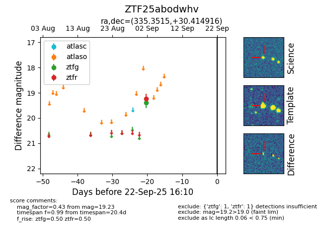

FINK: ZTF25abodwhv
Lasair: ZTF25abodwhv
ALeRCE: ZTF25abodwhv
ZTF25abodwhv (ztf,fink)
equatorial (ra, dec) = (335.3515,+30.41492)
galactic (l, b) = (88.3796,-22.20959)

last ztfg=19.40, ztfr=19.23
1 ztfg, 1 ztfr detections